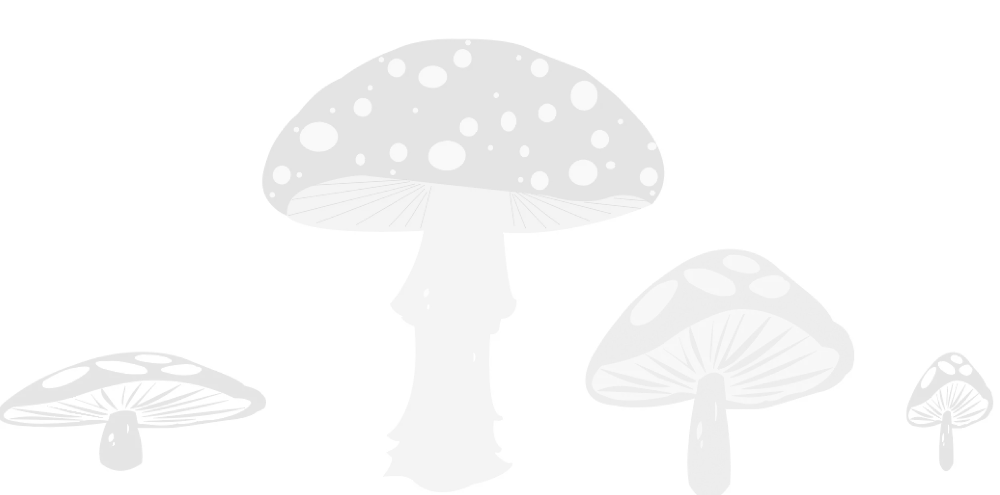

M U S H R O O M S

Exploring wild food is like finding hidden treasures in nature! In
Denmark, we have delicious mushrooms, some even packed with protein.
Picture wandering in the woods, discovering golden Chanterelles or
mysterious Morels.
They not only make your meals exciting but also connect you with
nature. And when you're on our website, be sure to read everything
carefully for more insights into the wonderful world of wild
mushrooms! Happy mushroom hunting!
READ MORE ABOUT MUSHROOMS
Remember to watch out for poisonous mushrooms and always check up on them before eating!